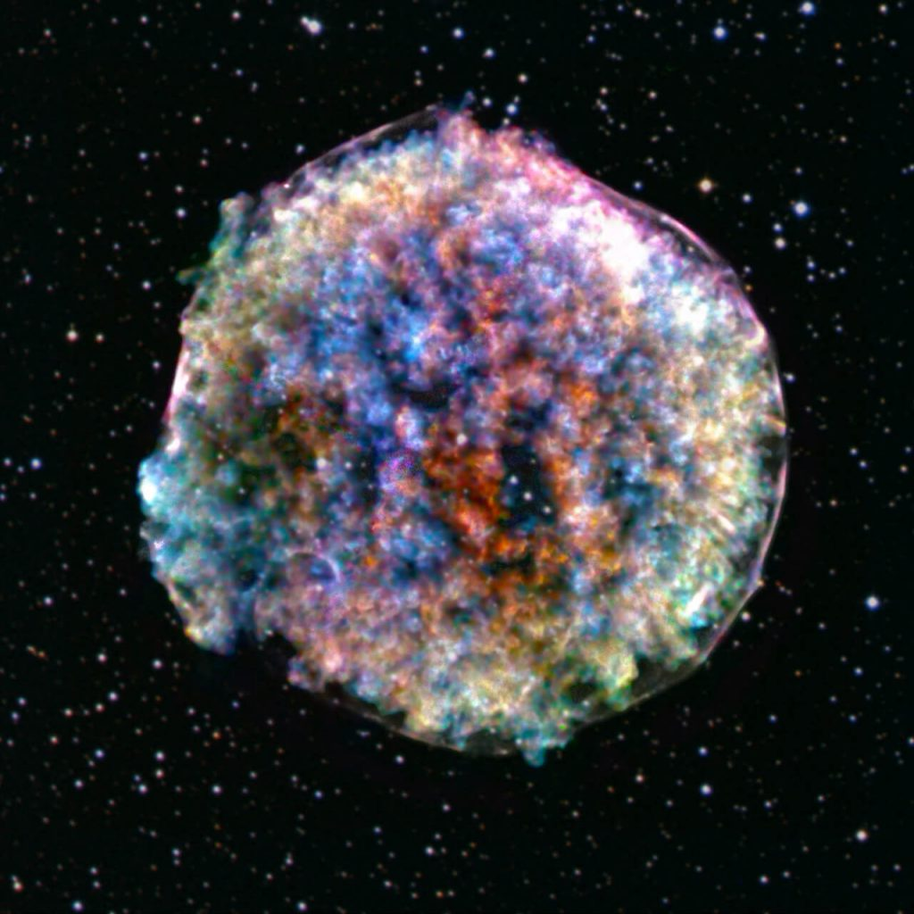
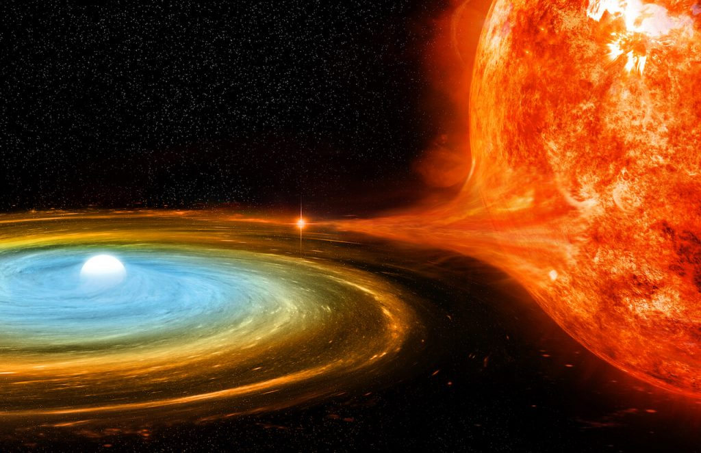

တစ်နာရီ မိုင် နှစ်သန်း
အခု ရှာဖွေတွေ့ရှိတဲ့ ကြယ်ကြီးကို LP 40−365 လို့ အမည်ပေးထားပါတယ်။ သူဟာ ကြယ်အပြည့်အစုံတော့ မဟုတ်ပါဘူး။ ဆူပါနိုဗာ (supernova) ပေါက်ကွဲမှုကြီး ဖြစ်စဉ်မှာ ကြွင်းကျန်ရစ်ခဲ့တဲ့ dwarf star လို့ခေါ်တဲ့ ကြယ်ပုလေးရဲ့ အပိုင်းအစ တစ်ခုပဲ ဖြစ်ပါတယ်။ ဒီ အပိုင်းအစ ဟာ အခုအခါ တစ်နာရီကို မိုင် နှစ်သန်း နှုန်းနဲ့ မစ်ကီးဝေး ဂလက်ဆီရဲ့ အစွန်းဆီကို ပြေးလွှားလို့ ခရီးနှင်နေပါတယ်။“ဒီကြယ်ဟာ အလွန် လျှင်မြန်တဲ့ နှုန်းနဲ့ သွားနေတာပါ။ ဒီနှုန်းအတိုင်းဆို မစ်ကီးဝေး ကြီးထဲကနေ လွတ်ထွက်သွားဖို့က သေချာသလောက်ပါပဲ” လို့ Boston University College of Arts & Sciences က လက်ထောက် ပါမောက္ခ ဂျေဂျေ ဟားမီးစ် (JJ Hermes) က ပြောပါတယ်။
ဆက်စပ် ဆောင်းပါး – ဂလက်ဆီ ဆိုတာ ဘာလဲ
ဆက်စပ် ဆောင်းပါး – စကြာဝဠာ ရဲ့ အလှဆုံး ဂလက်ဆီများ
ဒါပေမယ့် ဘာလို့ ဒီ ကြယ်အပိုင်းအစလေးက မစ်ကီးဝေး ဂလက်ဆီကြီးနဲ့ ဝေးရာကို ထွက်ပြေးဖို့ ကြိုးစားနေ ရတာလဲ။ အဖြေကတော့ ရှင်းပါတယ်။ ပြင်းထန်တဲ့ ဆူပါနိုဗာ ကြယ်ပေါက်ကွဲမှုကြီးဖြစ်တော့ လွင့်ထွက်လာတဲ့ အပိုင်းအစဟာ အရှိန်မကုန်သေးပဲ အလွန် လျှင်မြန်တဲ့ အရှိန်နဲ့ ပြေးထွက်နေတာပဲ ဖြစ်ပါတယ်။
သူတို့ နှစ်ယောက်ဟာ နာဆာရဲ့ ဟာဗယ် တယ်လီစကုပ် (NASA’s Hubble Space Telescope) ကြီးက ရတဲ့ အချက်အလက်တွေနဲ့ Transiting Exoplanet Survey Satellite (TESS) ခေါ်တဲ့ နေအဖွဲ့အစည်း ပြင်ပက ဂြိုလ်တွေ လေ့လာဖို့ လွှတ်တင်ထားတဲ့ ဂြိုလ်တု တို့က ရတဲ့ အချက်အလက်တွေကို ခွဲခြမ်းစိတ်ဖြာပြီး ဒီကြယ်ကြီး အကြောင်းကို သိရှိခဲ့ရတာ ဖြစ်ပါတယ်။
ဒီ သုတေသန ဂြိုလ်တု နှစ်လုံးက ရတဲ့အချက်အလက်တွေကို ခွဲခြားစိတ်ဖြာ ကြည့်လိုက်တဲ့ အခါ အခုကြယ်အပိုင်းအစ ကြီးဟာ အရှိန်အဟုန်နဲ့ ထွက်ပြေးနေယုံတင် မကပါဘူးတဲ့။ ဒီလို ပြေးနေရင်းနဲ့ လည်လဲ လည်နေပါ သေးတယ်တဲ့။

ကြယ်အားလုံးက သူတို့ရဲ့ ဝင်ရိုးပေါ်မှာ လည်နေကြတာပါ။ ကျွန်တော်တို့ရဲ့ နေကလဲ သူ့ဝင်ရိုးပေါ်မှာ လည်နေတာပါပဲ။ နေတစ်ပါတ် လည်ဖို့ကတော့ အချိန် ၂၇ ရက် ကြာပါတယ်။
ဆူပါနိုဗာ ပေါက်ကွဲမှုကနေ လွင့်စင်ပြီး ထွက်လာတဲ့ ကြယ်အပိုင်းအစ တစ်ခု အတွက်ကတော့ တစ်ပါတ်လည်ဖို့ ၉ နာရီ ဆိုတာက နည်းနည်း တော့ နှေးနေပါတယ်။
ဆူပါနိုဗာ ဘာ့ကြောင့်ဖြစ်ရတာလဲ
အရွယ်အစား သေးငယ်တဲ့ ကျွန်တော်တို့ရဲ့ နေလို ကြယ်မျိုးတွေ လောင်ဆာ ကုန်သွားတဲ့ အခါ အတွင်းကို ပြိုဆင်းလာပြီး ဂြိုလ်တစ်လုံးရဲ့ အရွယ်အစားလောက်ထိ သေးငယ် သွားပါတယ်။ ဒီ ဖြစ်လာတဲ့ ကြယ်ကို ကြယ်ဖြူပု (white dwarf) လို့ ခေါ်ပါတယ်။ ကြယ်ဖြူပုရဲ့ ဒြပ်ထုက နေရဲ့ ဒြပ်ထု နဲ့ မတိမ်းမယိမ်း တူပေမယ့် အရွယ်ကတော့ ကမ္ဘာ အရွယ်လောက်ပဲ ရှိတာပါ။ အရွယ်ကြီး တဲ့ ကြယ်ဖြူပု တွေမှာတော့ ဒီ ပြိုကျလာပြီး ပိသိပ်သွားတဲ့ ဖိအားကို မခံနိုင်တဲ့ အတွက် ဆူပါနိုဗာ ကြယ်ပေါက်ကွဲမှုကြီး ဖြစ်ပြီး ပေါက်ထွက်သွားပါတယ်။ အများအားဖြင့်တော့ ဒီလို ပေါက်ကွဲမှု မျိုးကို ကြယ်နှစ်လုံးပူး တွေမှာ တွေ့ရတတ်ပါတယ်။ ကြယ်ဖြူပုက သူ့ အဖော်ကြယ်ရဲ့ ဒြပ်ထုတွေကို စုပ်ယူရင်း တဖြည်းဖြည်း ကြီးလာပြီး ပေါက်ကွဲထွက် သွားတာပါ။
ဆက်စပ် ဆောင်းပါး – နေရဲ့ သက်တမ်း ကုန်သွားရင် ဘာဖြစ်လာမလဲ
အခု တွေ့ရတဲ့ LP 40−365 ရဲ့ နှေးကွေးတဲ့ လည်ပါတ်နှုန်းကို လေ့လာပြီးနောက် ပညာရှင်တွေက ဒီ ကြယ် အပိုင်းအစကြီးဟာ မူလက တစ်စင်းကို တစ်စင်း လှည့်ပါတ်နေတဲ့ ကြယ်ဖြူပု စုံတွဲ ဆီကနေ လာတယ်လို့ ကောက်ချက်ဆွဲကြပါတယ်။ ဒီ ကြယ်ဖြူပု စုံတွဲမှာ တစ်စင်းဆီက ဒြပ်ထုတွေကို နောက်တစင်းက စုပ်ယူရာကနေ တဖြည်းဖြည်း ကြီးလာပြီး ပေါက်ကွဲထွက်သွာတာလို့ ယူဆပါတယ်။ ဒီလို ပေါက်ကွဲတော့ နှစ်စင်းလုံး လွင့်ထွက်သွားတာပါ။ဒါပေမယ့် အခုတော့ ကျွန်တော်တို့က ဒီဖက် လွင့်ထွက်လာတဲ့ တစ်ခြမ်းကိုပဲ မြင်ရပါတော့တယ်။ ကျန် တစ်ခြမ်းက ရှာမတွေ့နိုင် တော့ပါဘူး။
“အခု သုတေသန တွေ့ရှိချက်က အခုလို ဆူပါနိုဗာ ပေါက်ကွဲမှုကြီး ဖြစ်တဲ့ အချိန်မှာ ပါဝင်ပါတ်သက်တဲ့ ကြယ်တွေရဲ့ အခန်းကဏ္ဍနဲ့ ပါတ်သက်တဲ့ အသိဉာဏ် အသစ်တွေကို ပေးပါတယ်။ နောက်ပြီး ကြယ်ပေါက်ကွဲပြီး ဘာဆက်ဖြစ်လဲ ဆိုတာကိုလဲ သိလာရပါတယ်။ ဒီကြယ်မှာ ဘာတွေ ဖြစ်ခဲ့လဲ ဆိုတာသိရတော့ သူနဲ့ အလားတူ ကြယ်တွေမှာလဲ ဘယ်လို ပေါက်ကွဲမှုတွေ ဖြစ်လာနိုင်မလဲ ဆိုတာ မှန်းဆကြည့်လို့ ရလာပါတယ်” လို့ Putterman က ပြောပါတယ်။
ဟားမီးစ်ကတော့ “ဒီကြယ်တွေက အတော် ဂေါက် တဲ့ ကြယ်တွေဗျ” လို့ ပြောပါတယ်။ ဒီ LP 40–365 လို ကြယ်တွေဟာ အရှိန် အမြန်ဆုံး နှုန်းနဲ့ ခရီးသွား နေယုံတင် မကသေးပါဘူး။ ကြယ်တွေထဲမှာ သတ္တုဓါတ် ပါဝင်မှု လဲ အများဆုံး ကြယ်တွေ ဖြစ်ကြပါတယ်။ ဥပမာဆို ကျွန်တော်တို့နေမှာ အဓိကက ဟိုက်ဒရိုဂျင်နဲ့ ဟီလီယံ ပဲ အဓီက ပါဝင် ဖွဲ့စည်း ထားတာ ဖြစ်ပါတယ်။ ဒါပေမယ့် ဆူပါနိုဗာ ပေါက်ကွဲမှုကြီးကနေ ကြွင်းကျန်ခဲ့တဲ့ ကြယ်တွေမှာတော့ သတ္တုတွေ အမြောက်အများ ပါဝင်လို့ နေပါတယ်။ ဒါဘာ့ကြောင့်လဲ ဆိုတော့ ဆူပါနိုဗာ ပေါက်ကွဲ မှု ဆိုတာ ပြင်ထန် တဲ့ နျူကလိယ ပေါက်ကွဲ မှုကြီး ဖြစ်လို့ပါပဲ။ ဒီပေါက်ကွဲ မှုမှာ ဘေးထွက် ကုန်ပစ္စည်း အနေနဲ့ သတ္တုတွေ ထွက်လာလို့ပါ။
ဆက်စပ် ဆောင်းပါး – နေမှာ အောက်ဆီဂျင် မရှိပဲ ဘယ်လို လောင်ကျွမ်းသလဲ
(မြန်မာ့သိပ္ပံ၏ မှတ်ချက်။ ဟိုက်ဒရိုဂျင် ကနေ ဟီလီယံ ဖြစ်ပြီး တဖြည်းဖြည်းနဲ့ ပိုလေးတဲ့ ဒြပ်စင်တွေ အဖြစ် ပြောင်းသွားတာဖြစ်ပါတယ်။ နောက်ဆုံး နျူကလိယ ဓါတ်ပြုမှုကနေ သတ္တုတွေ အဖြစ် ပြောင်းသွားတာပါ။ ဒါမျိုးက ပုံမှန် ကြယ်တွင်းမှာ ဖြစ်တဲ့ နျူကလိယ ဖြစ်စဉ်မှာ ဖြစ်လေ့ဖြစ်ထ မရှိပါဘူး။ ဆူပါနိုဗာ ပေါက်ကွဲမှုလို အရမ်း အင်အား ပြင်ထန်တဲ့ ပေါက်ကွဲမှု မျိုးမှာမှ တွေ့ရတတ်တာ မျိုး ဖြစ်ပါတယ်။)
ဟာမီးစ်က ဒီလို ကြယ်မျိုးတွေ လေ့လာရတာက စိတ်ဝင် စားစရာ ကောင်းပါတယ်လို့ လဲ ဖြည့်စွက် ပြောသွားပါသေးတယ်။
(မြန်မာ့သိပ္ပံမှ ဆောင်းပါးများအား ခွင့်ပြုချက် မရပဲ ကူးယူဖော်ပြခြင်း မပြုလုပ် ကြပါရန် မေတ္တာရပ်ခံ အပ်ပါသည်။)
Reference: Bizarre, Metallic Star Spotted Hurtling Out of the Milky Way at 2 Million Miles an Hour